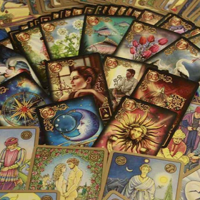
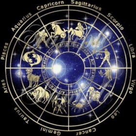

Notre site internet permet à ses utilisateurs de prendre contact des médiums reconnus pour qu'ils puissent en savoir plus sur leurs avenir. Nous avons un large choix de médium, qui ont chacun leur spécialisation (Cartomanciens, Astrologues ou Spirites), pour pouvoir vous guider. Si vous pensez plus voir votre avenir dans le jeu de tarot, alors les Cartomanciens se feront une joie de vous guider. Si vous êtes plus du genre rêveur, ou la tête dans les étoiles, les Astrologues sauront vous déchiffrer la voute céleste pour vous éclairer. Enfin, si vous choisissez de vous laisser guider par des instruments plus complexe, comme les boules de cristal ou le marc de café, les Spirites sauront décoder leur signification.
|  |  | |
Nos Cartomanciens |
Nos Astrologues |
Nos Spirites |
| Sur notre site de voyance que nous vous proposons vous trouverez bon nombre de cartomanciens et cartomanciennes spécialisés dans la cartomancie. Les professionnels de la cartomancie vous aideront à trouver des réponses concrètes à vos questions et doutes actuels sur les décisions à prendre dans votre présent et votre avenir proche. | Consultez sans plus attendre nos différentes applications gratuites qui éclairent de larges pans de votre personnalité. N'hésitez pas à faire appel à nos astrologues qui traiteront vos demandes dans la plus grande discrétion et avec le désir profond de vous aider à trouver les bonnes réponses. Qu'attendez-vous ? | Le spiritisme est la science qui s'attache à entrer en communication avec les esprits. Vous avez entendu parler de spiritisme à traver des proches et vous voulez à votre tour tenter l'expérience ? Consultez nos Spirites de qualité sans plus attendre ! Tous nous spirites ont effectué de grandes études. |